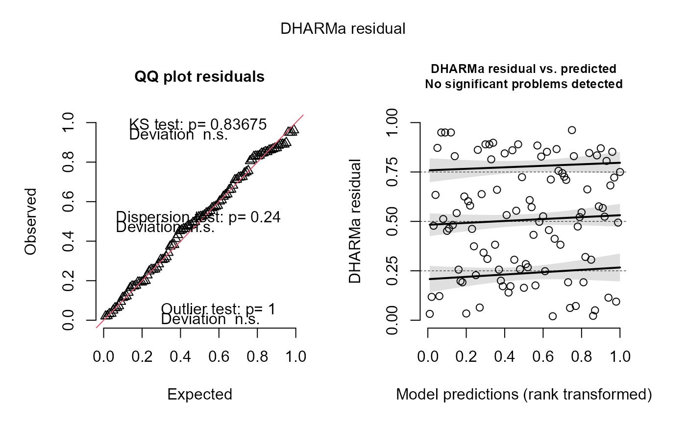

simulate.tinyVAST is an S3 method for producing a matrix of simulations from
a fitted model. It can be used with the DHARMa package
among other uses. Code is modified from the version in sdmTMB
Usage
# S3 method for class 'tinyVAST'
simulate(
object,
nsim = 1L,
seed = sample.int(1e+06, 1L),
type = c("mle-eb", "mle-mvn"),
...
)Arguments
- object
output from
tinyVAST()- nsim
how many simulations to do
- seed
random seed
- type
How parameters should be treated.
"mle-eb": fixed effects are at their maximum likelihood (MLE) estimates and random effects are at their empirical Bayes (EB) estimates."mle-mvn": fixed effects are at their MLEs but random effects are taken from a single approximate sample. This latter option is a suggested approach if these simulations will be used for goodness of fit testing (e.g., with the DHARMa package).- ...
not used
Value
A matrix with row for each row of data in the fitted model and nsim
columns, containing new samples from the fitted model.
Examples
set.seed(101)
x = seq(0, 2*pi, length=100)
y = sin(x) + 0.1*rnorm(length(x))
fit = tinyVAST( data=data.frame(x=x,y=y), formula = y ~ s(x) )
sims = simulate(fit, nsim=100, type="mle-mvn")
if(requireNamespace("DHARMa")){
# simulate new data conditional on fixed effects
# and sampling random effects from their predictive distribution
y_iz = simulate(fit, nsim=500, type="mle-mvn")
# Visualize using DHARMa
res = DHARMa::createDHARMa( simulatedResponse = y_iz,
observedResponse = y,
fittedPredictedResponse = fitted(fit) )
plot(res)
}
#> Loading required namespace: DHARMa
